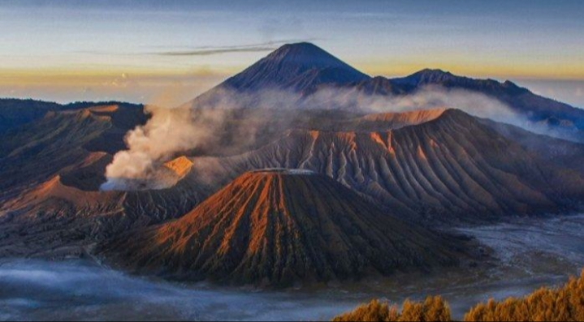

1. Pulau Sumatera sebelah selatan dan barat
berbatasan dengan ?
Selat Sunda dan Samudera Pasifik
Selat Sunda dan Samudera Indonesia
Selat Sunda dan Samudera Hindia
Selat Sunda dan Samudera Arktik
2. Salah satu pelabuhan yang terdapat di provinsi
Sumatera Barat adalah ?
Teluk Bayur
Bakauheni
Tanjung Emas
Gilimanuk
3. Sebelah Timur Pulau Sumatera
berbatasan dengan ?
Selat Malaka
Samudera Hindia
Teluk Benggala
Selat Sunda
4. Candi Borobudur merupakan kenampakan
buatan yang merupakan ikon provinsi ?
Jawa Tengah
Daerah Istimewa Yogyakarta
DKI Jakarta
Jawa Barat
5. Perhatikan gambar di samping.
Gambar tersebut adalah gunung bromo.
Gunung bromo terletak di ?
Jawa Tengah
Sumatera
Jawa Timur
Jawa Barat

6. Ibu kota provinsi Kalimantan Timur yaitu ?
Pangaklpinang
Medan
Balikpapan
Samarinda
7. Gunung tertinggi yang terdapat di benua Afrika
yaitu Gunung ?
Kalimanjaro
Himalaya
Everest
Ancocagua
8. Salah satu Benua di bumi, yang tidak ada
penghuninya adalah Benua ?
Asia
Afrika
Australia
Antartika
9. Perhatikan gambar berikut.
Hewan tersebut berasal dari Benua ?
Asia
Australia
Afrika
Antartika
10. Benua Australia terdiri dari .... Negara
10
11
14
15